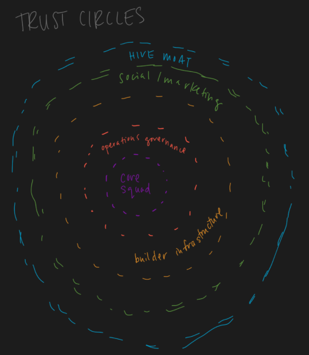

In an empire of lies, telling the truth is a revolutionary act. In a fearful society; love and trust are the primary tools of resistance.
Trust is only meaningful once we have fully understood how people can lie.
Having clearly defined and encoded rules means that there is an implicit shift from trusting those who own the medium to those who are transacting. In essence, trusting peers rather than a regulatory power.
Curious whether this has relations to philosophy of science and Cartesian skepticism
Related: game theory and trust, epistemic authority
To dream up important ideas you must think like an idealist; to build systems that will live up to those dreams, you must think like an adversary.
Trust as an Unquestioning Attitude
C. Thi Nguyen
“We inhabit trust like we inhabit the air, and we only notice it when it has departed.”
Most theories of trust presume that trust is a conscious attitude that can be directed at only other agents. I sketch a different form of trust: the unquestioning attitude. What it is to trust, in this sense, is not simply to rely on something, but to rely on it unquestioningly. It is to rely on a resource while suspending deliberation over its reliability
Baier’s Goodwill Theory
Colloquial use of “trust” blurs together two very distinct concepts
- Mere reliance: depending on something
- Attitude of trust: depend in some more normatively loaded manner
- E.g. failing to show up after having promised to do so: “I had trusted you and you let me down”
- Generally applies to things/people within our integrative stance — things we take to be part of us and towards things with which we are supposed to be integrating to form some larger whole
- The normativity here arises, not from there being any moral commitments in play, but from teleological integration: “The external objects that evoke the strongest sense of betrayal are those whose functions are most tightly integrated into our own thinking and functioning”
Question: can objects be trusted in the normative sense? Can we feel betrayed by objects?
This involves ascribing goodwill to the trusted and the sense of betrayal comes from discovery that there is no such goodwill after all.
Responsiveness Theories
Thinking that the fact that you trust in them/it will give a reason to fulfill that trust.
a trustworthy person “takes the fact that they are counted on to be a reason for acting as counted on” (Jones 2012, 66)
Betrayal of trust here is failure to be properly responsive
Hawley’s definition of trust is that “to trust somebody is to take them to have made a commitment to do something and to rely on them to fulfill that commitment. Hawley’s account grounds the sence of betrayal in the trusted person’s failure to live up to their commitments”
Non-agent based theories
Yet all of these theories share the presumption of agent-directedness or intentionality.
Related, agential gullibility and the Extended mind Hypothesis
“The veteran also suffers from a problem of trust, a building block on which all of social life is erected. The everyday, taken-for-granted reality of civilian life ignores much; civility assumes the nonlethal intentions of others. In war, however, all such assumptions evaporate: one cannot trust the ground one walks on, the air one breathes, nor can one expect with full assuredness that tomorrow will come again.” (Kearl 1989, 353) … The fact that many philosophers find it odd to speak of being betrayed by their environment is perhaps best explained by the fact that most philosophers have lead, by and large, pretty cushy lives.
Interesting to distinguish between what we are trusting when we trust designed (e.g. search engines, devices, websites, etc.) and non-designed objects (the ground, physics, etc.)
To lose trust is to shift from the unquestioning state to the endlessly skeptical and suspicious mood.
Web3
“Because blockchains allow us to define succinctly our shared truths, and because the record itself is shared across all participants, there is a whole new “trust space” we can explore, searching for more valuable kinds of transactions impossible within merely legal fictions.”
Trust Circles
From Buzzard

Trust between human and non-human systems
Trust has historically distinguished from mere reliance (Baier, 1986, p. 242) through an attitude of trust or extra factors which distinguish genuine trust from mere reliance (Hawley, 2014, p. 1) that we take to inanimate objects. However, algorithms and computerized decision making systems are beginning to play larger roles in our society — deciding jail time for criminals, giving medical diagnoses, and many more. How should we weigh the epistemic authority or trustworthiness of human versus non-human expert systems?
I posit that, until these algorithmic systems are able to reliably be held accountable for their decision making, they should not be epistemologically load-bearing. These systems should supplement human decision making rather than be considered an epistemic authority in and of itself. Let us construct a case study to examine this in more detail.
Suppose you are a hiring manager at a tech company. There is a potential candidate in the pipeline for you company that you are very on the fence about whether to hire or not. She has an incredibly strong ‘yes’ recommendation from a more senior hiring manager. You don’t know this higher up very well but you know that her and this candidate are close friends already. On the other hand, the company uses an internal AI-powered candidate ranking system. This system is quite complex and the original engineers who designed it have since long left the company. This system gives this candidate a strong ‘no’ hire recommendation.
In this situation, both systems are ‘authorities’, having been approved by the company for use in the hiring process. The more senior hiring manager is clearly an expert, having been working in this company and hiring many stellar employees in the past. The algorithm can also be considered an expert here, having scored extremely highly on tests of accuracy in predicting based off of historical data whether candidates will do well in the company. It has been vetted for internal use.
However, it is important to note here that in the case example, while both systems are potentially biased, it is far more likely that the algorithmic system is biased.
The senior hiring manager could potentially be doxastically partial towards her friend but not because it is normative to be always partial to our friends. Notably, Crawford defines being a good friend constitutively involving forming attitudes about one’s friends that are appropriately responsive to the features that one’s friends have that appear to warrant those attitudes (2019, p. 1). It is unknown to you whether the senior hiring manager has any state-given reason to highly recommend her friend, so we cannot assume this to be the case as it is an unbased claim (as we have no evidence to believe so). Thus, we have solid reason to assume that the manager’s friend actually does have those features that she believes makes them such a good candidate.
However, there is one clear detail in this case that makes the algorithmic expert far more likely to be biased: it is trained on historical data that has been sanitized and decontextualized. In fact, historical data shows that in the past there have been more men in the women in the workforce. The forbidden base rate (Gendler, 2011) here is the statistical information about the relative number of male and female employees in the tech industry. If the data was sampled at random, then it is statistically optimal for the algorithm to prefer male applicants to female applicants rather than purely on the basis of qualification for the position. This, while epistemically rational, may not be the correct choice of action for moral reasons.
Lastly, I put forth the concept of epistemic accountability, a measure of whether there are ways to holding the agent in question accountable for their doxastic claims. Accountability here refers to the ability to reduce the epistemic trust in an authority after violating an epistemic norm (e.g. being incorrect). I argue that the algorithmic authority cannot be held accountable for its actions as it does not have capacity as an epistemic agent on its own — it cannot be held accountable for its decisions. As the algorithm itself is a designed object we can instead attribute it forms of derived trust whereas the trust is not only in the algorithm itself, but its designer (the engineers who created the algorithm, the data engineers who sourced and cleaned the data) or experts who know how to operate it. As both types of progenitors of this type of trust are absent, it would be epistemically irrational to trust this algorithm.
In conclusion, it is clear that despite potential biases from both parties, the algorithmic authority has clear flaws in its ability to be held accountable as an epistemic agent and highly likely to be partial against the female candidate due to the forbidden base rate in this case study. It is much more likely that the senior hiring manager is a trustworthy epistemic agent.
References
- Baier A. 1986. Trust and antitrust. Ethics 96:231–60.
- Hawley, K., 2014. Partiality and prejudice in trusting. Synthese, 191(9), pp. 2029-2045.
- Crawford, L., 2019. Believing the best: on doxastic partiality in friendship. Synthese, 196(4), pp. 1575-1593.
- Gendler, T. 2011. On the Epistemic Cost of Implicit Bias. Philosophical Studies 156(57), pp. 33-63